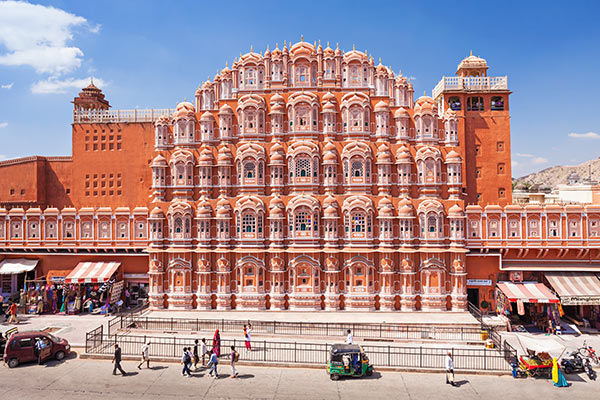

Famous Tourist Places
Place 1: Taj Mahal, Agra

The Taj Mahal, located in Agra, Uttar Pradesh, is one of the most iconic and recognized landmarks in India. Commissioned by the Mughal Emperor Shah Jahan in memory of his wife Mumtaz Mahal, this stunning white marble mausoleum is a masterpiece of Mughal architecture. Its intricate carvings, majestic dome, and the reflection pool create a mesmerizing sight, especially during sunrise and sunset, making it a symbol of eternal love and a UNESCO World Heritage Site.
Place 2: Jaipur's Hawa Mahal (Palace of Winds)

The Hawa Mahal, or Palace of Winds, is a unique architectural marvel located in the "Pink City" of Jaipur, Rajasthan. Built in 1799 by Maharaja Sawai Pratap Singh, this five-story palace is characterized by its intricately designed façade with 953 small windows, or 'jharokhas,' that allow cool breezes to flow through, giving the palace its name. The pink sandstone structure is a blend of Rajput and Mughal architectural styles, and it stands as a testament to the rich cultural heritage of Rajasthan. Visitors can explore the numerous chambers and corridors, gaining insights into the royal history of Jaipur.
Place 3: The Golden Temple, Amritsar

The Golden Temple, or Sri Harmandir Sahib, is the holiest shrine in Sikhism and a symbol of religious tolerance and harmony. Located in Amritsar, Punjab, the temple is surrounded by the serene Amrit Sarovar (Pool of Nectar), creating a tranquil atmosphere. The temple's distinctive golden exterior is a result of gilded copper plates, and its architecture blends Sikh and Mughal influences. Visitors, irrespective of their faith, are welcome to participate in the community kitchen, providing free meals to thousands daily. The Golden Temple's spiritual significance, architectural beauty, and the warm hospitality extended to all make it a spiritually enriching destination.
Place 4:Qutub Minar, Delhi
Located in Delhi, the Qutub Minar is the tallest brick minaret in the world, standing at 73 meters. Built in the early 13th century by Qutub-ud-din Aibak, this UNESCO World Heritage Site is surrounded by several ancient structures, including the Iron Pillar of Delhi. The minaret's five distinct stories feature intricate carvings and inscriptions from the Quran, showcasing the rich cultural heritage of the Delhi Sultanate period. Visitors can climb to the top for panoramic views of Delhi and explore the archaeological complex surrounding this historical monument.
Place 5: Gateway of India, Mumbai:

The Gateway of India is an iconic monument situated in Mumbai overlooking the Arabian Sea. Built to commemorate the visit of King George V and Queen Mary in 1911, this Indo-Saracenic arch stands as a symbol of India's rich colonial history. The grand structure is adorned with intricate designs, including Islamic, Hindu, and European elements. The Gateway of India is not only a historical landmark but also a popular gathering spot for locals and tourists alike, offering breathtaking views of the sea and serving as a starting point for boat trips to Elephanta Island.